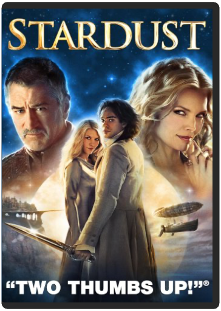
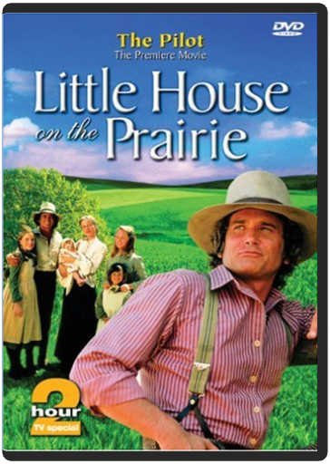

Stardust  Escape into the enchanted world of chivalry and romance in Stardust, an epic tale starring Claire Danes with Michelle Pfeiffer and Robert De Niro. In hopes of wooing a beautiful girl (Sienna Miller), Tristan (Charlie Cox) promises to bring her a falling star. But he’s in for the adventure of his life when he discovers the star is actually a celestial beauty named Yvaine (Danes) When an old witch Lamia (Pfeiffer) attempts to steal Yvaine’s youth, Tristan must protect her at all costs, in this magical family adventure that will make you fall in love over and over again.  SerendipityPeter Chelsom SerendipityPeter Chelsom Irresistible stars John Cusack and Kate Bekinsale are drawn together and take a chance on love in the critically acclaimed romantic comedy! In the course of one magical evening, Jonathan and Sara meet unexpectedly…then part without expectation when she decides they must let fate determine if they are meant to be together. Years later, they are both engaged to others but cannot give up the dream that- despite time, distance and the obstacles that conspire to keep them apart, they will one day meet again! Also starring Jeremy Piven and Molly Shannon, in a stellar supporting cast- you're destined to agree with audiences everywhere who fell for the surprising charms of this delightful big screen romance! Little House on the Prairie - The PilotVictor French, Michael Landon, Lewis Allen, Maury Dexter, Alf Kjellin Based on the best-selling books by Laura Ingalls Wilder, this classic, produced and directed by Michael Landon, takes us from the woods of Wisconsin to the plains of Kansas where the Ingalls struggle to build a new life. With indomitable courage that celebrates the resilience of the human spirit, the Ingalls face endless challenges and experience countless adventures as they pursue their dream of a new home. This premiere movie is a "must-have" for all Little House fans! This DVD has been restored using state-of-the-art color correction, picture enhancement and noise reduction technologies. |


 Made with Delicious Library
Made with Delicious LibrarySpringfield, State zipflap congrotus delicious library Doddridge, Edward